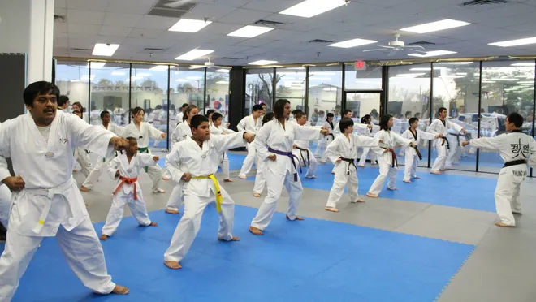
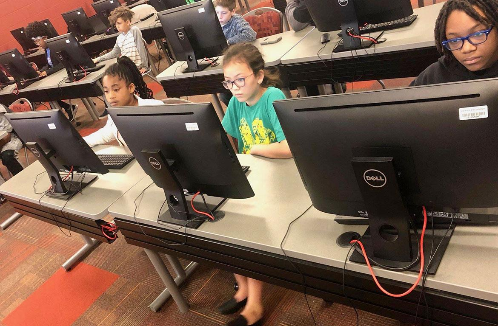
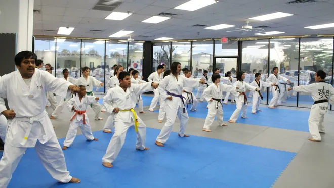
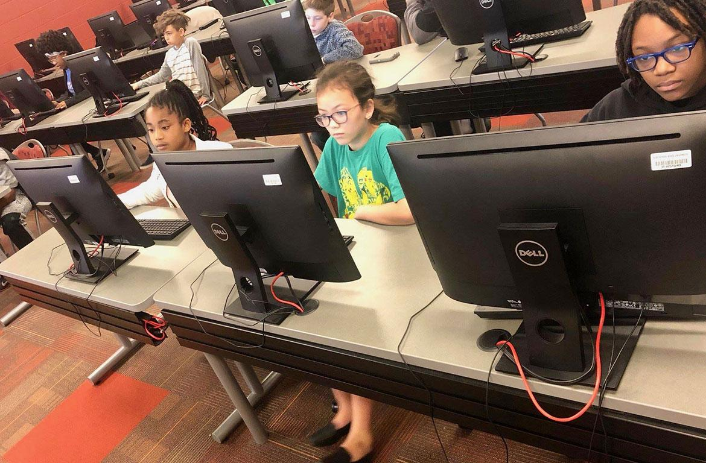

Jun Kim
“Flight 276 from Incheon to Los Angeles, please get ready to board.” These were the words of a flight attendant, possibly the last time I would hear my native language in my native country for a long time. My social anxiety had stemmed from my childhood, as I moved from South Korea to the United States at the age of 7. I had lost all my friends and had to adapt to a place I was not familiar with. Because English was not my first language, I would stutter a lot in the hopes of trying to sound native. I would preemptively think of the sentence I would say in my head before I spoke, but sometimes my brain would freeze and I would end up stuttering. My social anxiety worsened when I was cold-called in my 7th-grade class about a math problem. Flustered, I stuttered out a random answer, which made the class laugh. After humiliating myself in front of the class, I began ignoring the teacher or saying that I didn't know when I got called because I feared judgment, which only worsened my social anxiety. I felt my social anxiety worsening during the pandemic, which was an issue because I would be in an unfamiliar environment in college. I was afraid of making friends because I didn’t want to be the socially awkward one at school that nobody would talk to. I was afraid every day when I went to bed and prayed that this feeling would disappear. It would cause me depression and anxiety. My social anxiety was a barrier that I decided to fix by working at a restaurant. I worked at a local sushi restaurant that my friend recommended. During my first shift, I was so nervous that I would mess up and thus had a hard time asking customers if they needed anything. With more exposure, my anxiety slowly started to fade as I grew more comfortable interacting with my coworkers and customers. When my boss saw my rapid improvement in my interactions, he gave me a 30% tip raise, which further boosted my confidence. I needed the money for college because I already had a sister attending college and my parents worked hard to support her education. I wanted to have financial independence and learn how to manage my money. I’ve always depended on my parents for money when I wanted to go out and hang out with my friends. So this new job will make me feel more responsible. When it was time for me to return to school, I found myself confidently contributing to a class by actively participating in more discussions and asking questions when I didn’t know something. I was never able to do these things before because I was intimidated to speak up and share my ideas. I was scared that people would judge me because of what I thought. However, I was wrong and eventually learned to become more self-confident by exposing myself to situations that forced me to confront and overcome my social anxiety.
I’ve been practicing taekwondo for almost 5 years, starting from the 7th grade. When I first attended the class, it was located in a Korean traditional center, where people can learn the history and immersive culture of Korea. At this building, I took an introductory Taekwondo class. The purpose of this class was to ease beginners like me into taekwondo. At this introductory training course, I was by far the oldest member, which hurt my self-esteem. Because I was the oldest attendee, I was able to pick up on the basics of taekwondo very fast. In taekwondo, there are different kicks and Poomsae (motion of defense and offense) you must memorize for each belt. The class had approximately 25 young kids whose parents wanted to introduce them to taekwondo. Since I was the oldest one I found myself helping them learn basic kicks and movements. The class would be on Saturdays and lasted approximately 10 weeks. Our Master was preparing the class to present what we learned at the end of the 10 weeks to everyone in the teaching facility. Since my Master was the only one teaching the class, I got to help him prepare for the presentation. When the day came my master made me the special performer and made me do special kicks, much to the delight of the audience. One of my more memorable kicks involved jumping over 7 people and also doing a triple kick. After the presentation, my master told me to attend his dojang class for free and get special lessons because I had potential. I felt honored because not many people get lessons for free. It took me around 3 years to obtain my black belt. When I finally got my black belt, my master asked me to be one of the assistants for the taekwondo introduction class. I agreed and with the skills I learned, I got to teach my skills to others and became a mentor in my own sense, helping others who may have been in a similar situation to me. At the end of the 10 weeks, we went up on a stage and presented what we learned. Every class in the building was part of this show, including the traditional Korean drummers, dancers, and musicians. I was very nervous to present in front of more than a 100 people. When my taekwondo class presented, my master made me do special kicks, much to the delight of the audience. One of my more memorable kicks involved jumping over 7 people and also doing a triple kick. After the presentation I felt relieved and it boosted my confidence. When I was getting closer to getting my black belt, my master told me to attend his dojang class for free and get special lessons because he saw potential in me. I felt honored because not many people get lessons for free. It took me around 2 years to obtain my black belt. When I finally got my black belt, my master asked me to be one of the assistants for the taekwondo introduction class. I agreed and with the skills I learned, I got to teach my skills to others and became a mentor in my own sense, helping others who may have been in a similar situation to me.
The pandemic opened my eyes to be grateful for what I have and empathize with other people’s financial and domestic struggles. I was shocked how people were fighting to get toilet papers and water bottles in grocery stores and leaving nothing behind for other families. Financial stability and access to basic necessities such as food were thus difficult for many people. Wanting to aid these people and give back to my community, I decided to volunteer at a local church food drive called The Hankook Presbyterian Church. We provided boxes with a variety of foods, including meat, vegetables, and fruits, which were meant to sustain a family of three for up to two full days. I volunteered to put a variety of foods into boxes and help distribute them to those in need. I wanted to help the community and learn something from helping others. I enjoyed the feeling of helping the people that were struggling because I can relate to their problems and knowing that I made their day better at the end of the day, made my day the day that I made their day. The job was hard, the people would come through one after another. The place was located in LA and I would drive there for about an hour because of traffic. Although the travel was a long drive, I felt like it was worth it. The line would be long and the day felt like hours, it was a hard job. Many people were trying to take more than they should and this caused some problems. But I knew that they had to do anything in order to feed their family in this situation. Covid 19 affected people's minds and their behavior. After the food drives would end, I would take the leftover boxes back with me to share with my own community as well. I called friends and family to ask if they needed support regarding food. If they agreed, my dad and I would drive to their location and hand it to them. The true reward of this experience was seeing their appreciation and generosity, as they would sometimes donate items of their own in return. They would bring something small for us to take home like salt and ramen packages even though they were the ones in need of food. It made me very appreciative of how we were helping each other out during hard times even though it’s not something big. My dad and I did this three times a week for a month. It would take around 2 hours to pass everything out and was exhausting work, but being able to see firsthand how I was aiding families in need was gratifying and made me realize how even small acts such as distributing food could create such a positive impact on these people’s lives. Consequently, I began to appreciate all the little things that I have, and now know how good it feels to give back and help someone in need.
Experience
Coding TA
• Helped middle schoolers with coding
• I was the TA for my first CS teacher
• Worked a lot with Python
Taekwondo Assistant
• Helped students who were new to taekwondo
• Fixed their forms
• Made sure everyone was doing their exercises
• Assisted more than 100 students
Education
UC Riverside
Portfolio




 